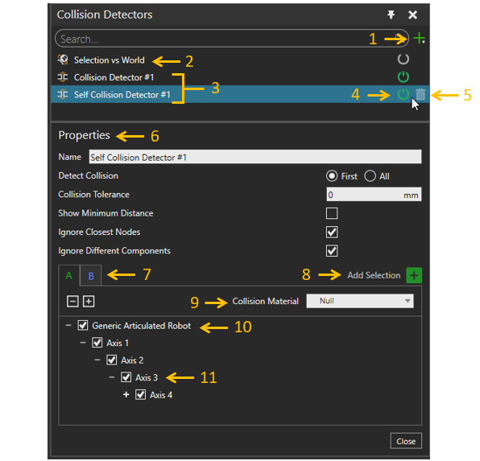

Collision Detectors

- Create a new collision detector.
- Selection vs World collision detector. This compares the selected
geometry against the geometries in the 3D world.
- Added collision detectors. These detectors check collisions between
A and B geometries.
- Detector on/off button.
- Remove detector.
- Properties:
- Name Name of this collision detector.
- Detect Collision
- First Record the first detected collision.
- All Record all cases of detected collisions.
- Collision Tolerance Collision detection threshold
distance.
- Show Minimum Distance Show the minimum distance
between collision.
- Ignore Closest Nodes Ignore collisions between
immediate nodes that make up a parent-child pair in a component.
- Ignore Different Components Ignore collisions
between nodes. Each node in different components that are attached
together e.g. Gripper attached to Robot.
- A and B geometries for collision check. A and B can include a set
of components from the 3D world.
- Add the selected component to A or B geometries.
- Material of the A or B geometries when the collision happens.
- Single component in the A or B geometries. It can be included or
excluded from the check box.
- Node of a component. It can be included or excluded from the check
box.
See also Detecting
Collisions task.